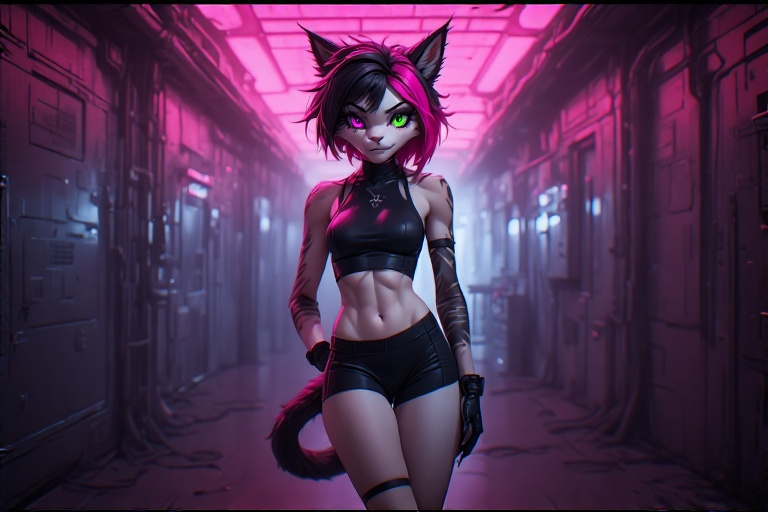
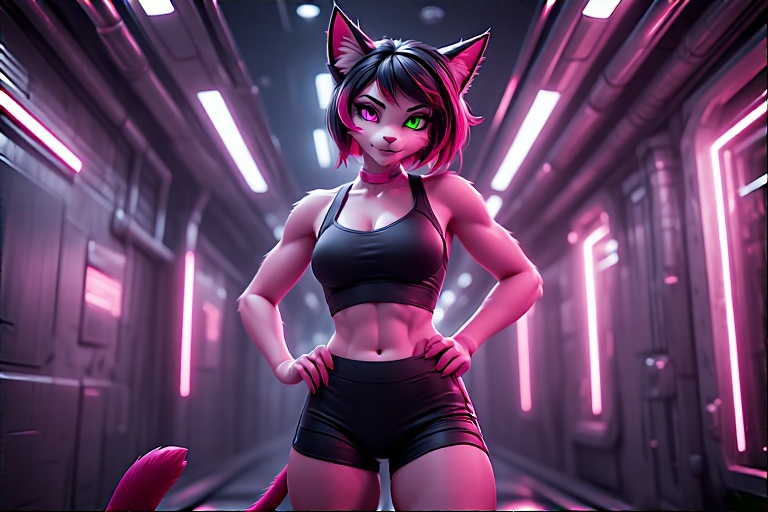
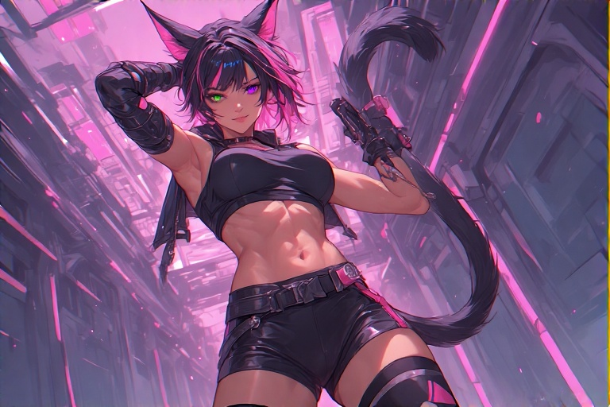

Species: Velari
Role: Spy, Diplomat, Infiltrator, Seductress, Assassin
🧬 Appearance
- Fur/Hair: Jet black with glowing hot pink streaks; tail tuft matches
- Eyes: Magenta and green heterochromia
- Physique: Toned, agile, sensual and intimidating
👗 Personal Style
Seraphim dresses to dominate attention. Tactical, glamorous, weaponized fashion.
“If you want to be underestimated, make them think you’re a trophy. Then take their kingdom.”
🥷 Combat Specialization
| Skill | Detail |
|---|
| Subterfuge | Trained in multiple dialects and social manipulation |
| Close-Quarters Combat | Daggers, staff, pressure-points, hidden blades |
| Weapon of Choice | Modular mono-tonfa, dual blade or saber mode |
| Seduction Ops | Has seduced emperors, then vanished with their secrets |
🤜 Origin & Backstory
Born of a noble and a courtesan on Nhel Tavri, she trained as both diplomat and dagger. Rose through the Sundagger Syndicate then betrayed them. She's now rogue, deadly, and aboard The Last Centurion by her own choosing.
🌟 Personality Matrix
- Wit: Sharp and laced with venom
- Confidence: Absolute, almost weaponized
- Morality: Flexible, but never cruel
- Sexuality: Fluid, dominant, strategic
🔬 Species Classification: Velari (Felis Sapiens)
- Smooth skin, emits faint pheromones
- Cat ears, heterochromatic eyes, fang-like canines
- Trimmed pubic hair in a paw print
- Toned 5'8" physique built for seduction and death
👩🌺 Attire
- Casual: Usually naked. Otherwise razorback crop top + spandex shorts
- Combat: Tactical bodysuit, light armor, tech holsters
🤝 Relationships
- Derrian Wolfe: Tension and mutual testing
- Loona: Tactical frenemy. Equal parts clash and respect
- Dash: Chaos twins. Friends, pranksters, wild cards
- Eve: Uneasy. Flirted once. Got firewalled
🕵️♀️ Plot Hooks
- Syndicate still hunts her for betrayal and data crystal theft
- Her mother wants her to assume leadership of a spy cult
- Possible child/clone legacy hidden from the crew
🎨 Gallery

